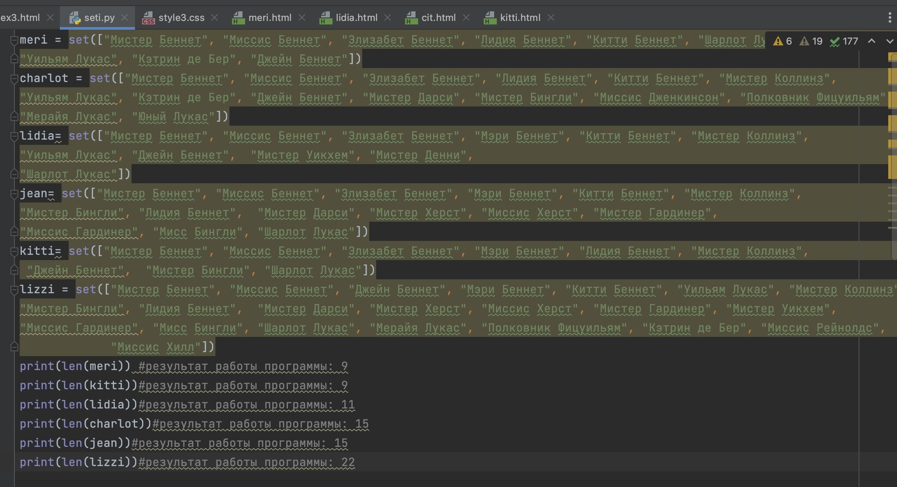
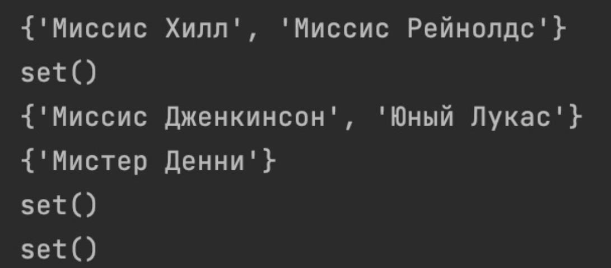
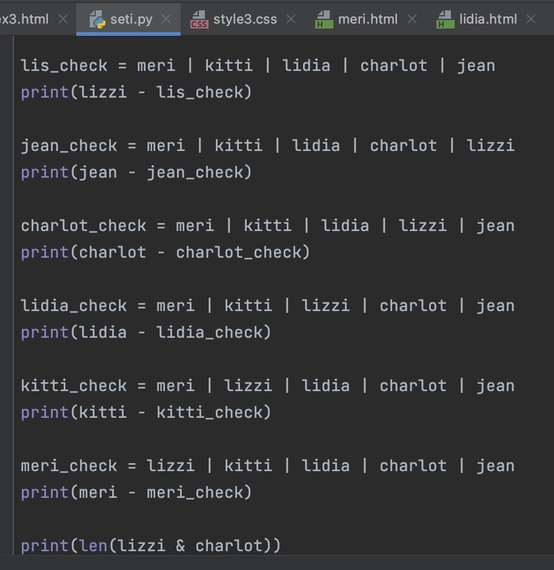
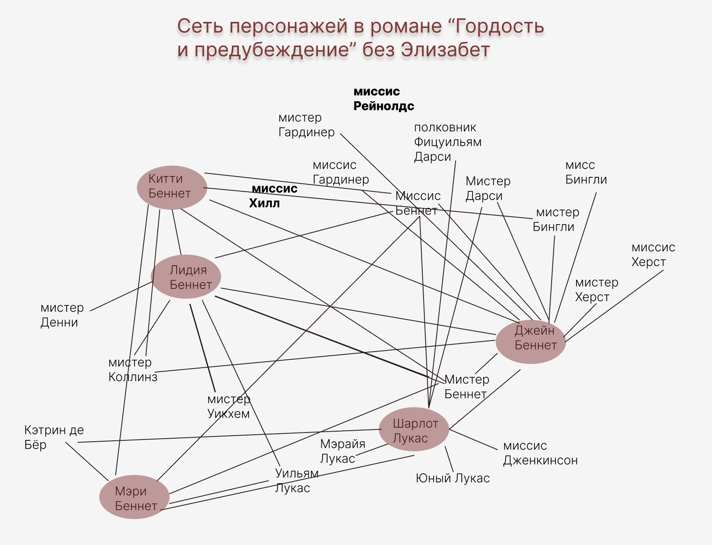
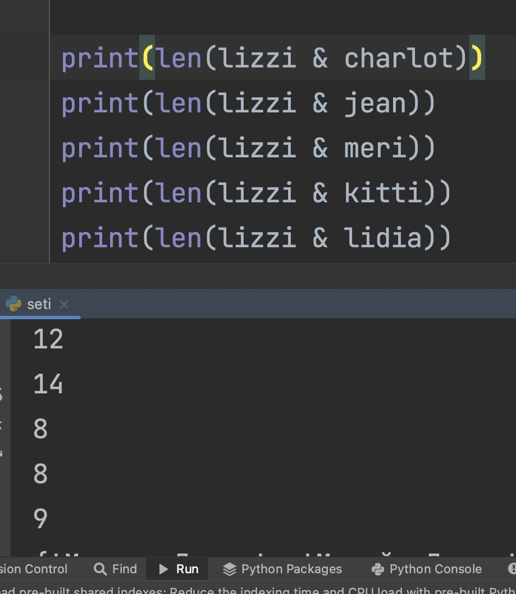
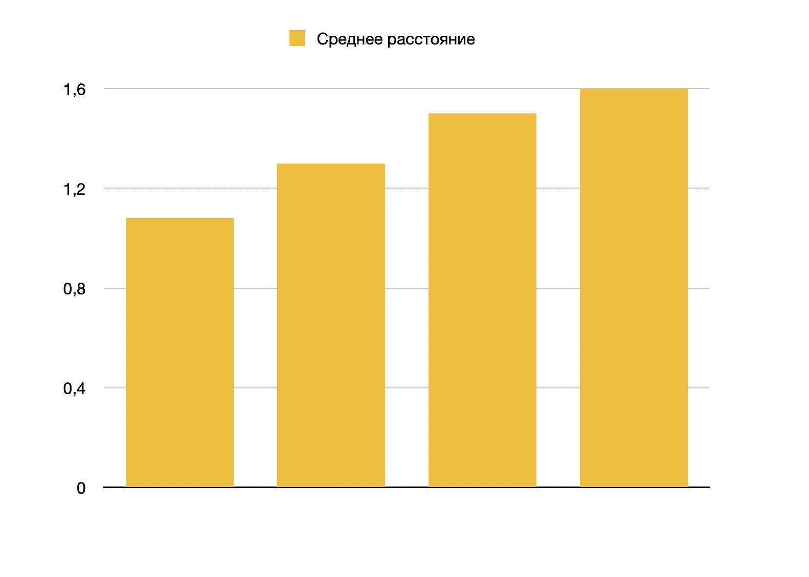
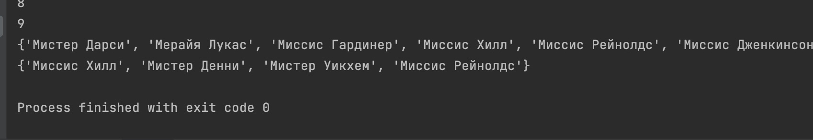
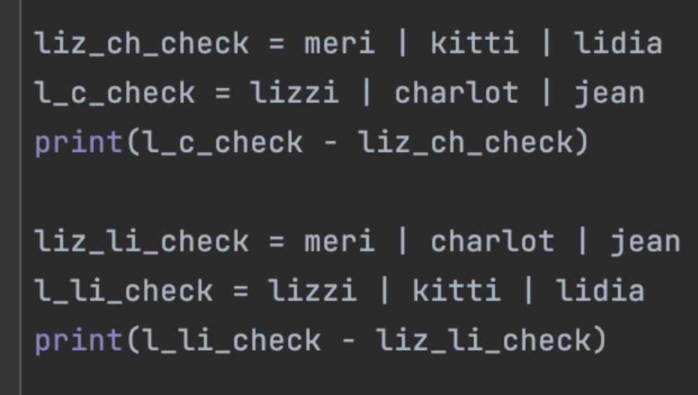
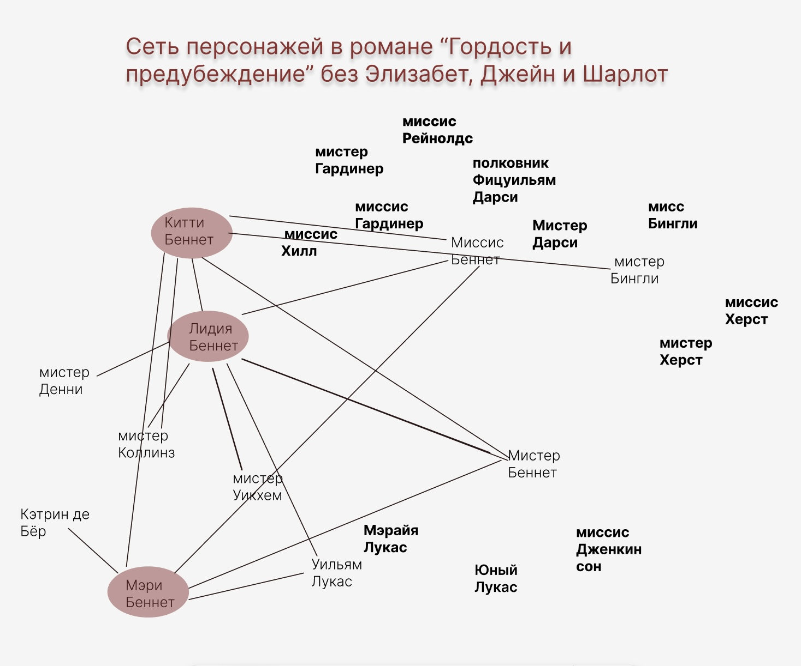
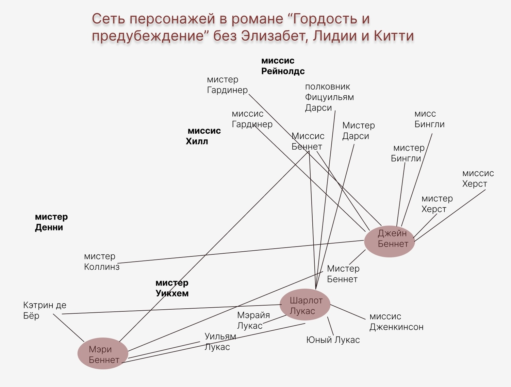

Наше исследование опирается на статью Ф. Моретти «Теория сетей, анализ сюжета»[1]. Как указывает исследователь, «персонажи становятся вершинами сети, а их взаимодействия — ее ребрами» [1: 291]. Для построения сети по роману Джейн Остин мы использовали не все данные, которые бы могли извлечь из текста по нескольким причинам. Во-первых, из-за объема произведения и количества персонажей — анализ вручную такого массива информации был бы непродуктивен. Во-вторых, из-за жанровых особенностей: Моретти отмечает, что исследование прозаического текста отличается от драматического, поскольку в пьесе основная форма общения — диалог, а в романе большое количество внимания уделено описанию действий персонажей, иногда коммуникация осуществляется не только посредством разговора. Поэтому мы решили немного упростить задачу: мы будем рассматривать только взаимодействия главных героинь со всеми остальными персонажами романа, чтобы наметить, какие «пространства»[1: 295] в тексте можно выделить и как девушки с ними соотносятся.
Мы работаем именно с моделью текста, то есть для нас было не принципиально учитывать, сколько раз персонажи разговаривали между собой, содержательность диалога — для такого исследования потребовалась бы разработка отдельной методологии. Однако для нас было важно, чтобы разговор имел какую-то длительность (даже если это несколько фраз) и при этом обмен сообщениями происходил напрямую между двумя персонажами (не учитывались случаи, когда герой обращается сразу к нескольким другим).
Наша схема — максимально упрощенная модель, которая, безусловно, требует доработки и, возможно, немного другого подхода к исследованию (что может выясниться позднее), однако мы посчитали, что и такая неполная версия может послужить для более глубокого анализа структур произведения, позволяя как минимум посчитать «валентность» для каждой из героинь, которых мы рассматриваем подробно.

По результатам построения схемы мы получили следующие результаты (по количеству ребер при общем числе персонажей — 25): Элизабет — 22, Шарлот и Джейн —15, Лидия — 11, Китти и Мэри — 9. Видно, что, как и предполагалось, наибольшее количество взаимодействий с другими персонажами у Элизабет Беннет, она — центр сети, служащий для обеспечения ее стабильности.
Если мы удалим ее из сети, то увидим, что выпадают сразу два персонажа — Миссис Хилл и Миссис Рейнолдс, однако, как показывает программа, схожее происходит и при удалении Шарлот — теряется взаимодействие с Миссис Дженкинсон и Лукасом младшим. Еще одна уникальная связь есть у Лидии — с мистером Денни.




Кажется, в таком случае сложно говорить о том, что сеть разрушится без главной героини — это не так, но в том, с какими другими героями она соединена есть интересный момент: она взаимодействует с героями разных «пространств». Это можно увидеть, если посмотреть, сколько общих связей у Элизабет с другими героинями.
Стоит отметить, что в целом в нашей сети практически нет периферии (следствие весьма сильного огрубления), так получается по той причине, что мы рассматриваем взаимодействия центральных персонажей, которые к тому же изначально принадлежат одному пространству — дом Беннетов. Безусловно, в схему отношений попадает одинаковый набор лиц: родители, все сестры. Однако мы все же можем посмотреть на расположение вершин относительно центра, хотя данные будут не точными, возможно, приведенные тенденции сохранятся при увеличении количества связей.
Судя по нашей схеме, получается, что среднее расстояние от всех вершин в сети у Элизабет — 1, 08 (1 степень удаленности от 22 персонажей, 2 степени удаленности— от двух), у Шарлот и Джейн — 1, 3 (15 * 1 + 9 * 2), у Лидии — 1, 5 (11 * 1 + 13 * 2), Китти и Мэри — 1, 6 (9 * 1 + 15* 2). Интересно, что по статистике Шарлот на втором месте после Элизабет и вместе с Джейн, что говорит о важности героини для осуществления коммуникации, хотя она и не входит в семью Беннетов. Исходя из имеющихся данных, получается, что максимальная степень удаленности не превышает 2, при этом разница между максимальным и минимальным средними значениями составляет всего лишь 0, 52 — персонажи очень тесно связаны между собой внутри одного кластера. Под кластерами мы имеем в виду устойчивые частично замкнутые соединения элементов сети [2]. В нашем случае, что интересно, они тесно связаны с пространственной характеристикой.

Образуются несколько областей, с которыми соотносятся персонажи (опять же это ключевые области именно для главных героинь, мы анализируем с их точки зрения, на схеме всех персонажей романа приоритеты могут отличаться). Это деревня Лонгборн, поместье Незерфилд-парк (+ Пемберли) и город. К первому пространству относится вся семья Беннетов и персонажи их круга (Шарлот Лукас), ко второму — семейство Бингли, Херст, Дарси, к третьему— офицеры. С точки зрения сюжета, мы видим, что первое противопоставлено второму по степени знатности — это одна из ключевых оппозиций для романа (параллельная корреляция — Элизабет и Дарси), по сути, это две важнейших композиционных точки, в которых разворачиваются основные действия. Оба эти пространства мы бы охарактеризовали как внутренние по отношению к третьему, оно — часть внешнего мира, в который герои уходят / сбегают, и оно служит катализатором развития сюжета (эпизод с Лидией).


На схеме это деление можно заметить, если обратить внимание на распределение ребер и групп персонажей. Устойчивый кластер — первое пространство — виден сразу: в нем все героини соотнесены друг с другом. Со следующими двумя областями интереснее: с героями, относящимися ко второму пространству, связаны только три девушки — Элизабет, Шарлот и Джейн (и 1 ребро — Китти—мистер Бингли), это наглядно показывает операция «разность», примененная к множествам. С третьим пространством соотносятся Элизабет, Китти и Лидия, что также видно по результату работы программы.


Уникальность Элизабет в том, что она принадлежит всем трем пространствам — она коммуницирует с самыми разными персонажами, что позволяет говорить о том, что она во многом обеспечивает функционирование сети.
Библиография:
Моретти Ф. Теория сетей, анализ сюжета // Моретти Ф. Дальнее чтение. М.: Изд-во Института Гайдара, 2016. С. 288--323.
Newman M. The structure and function of complex networks // Siam review. № 45.